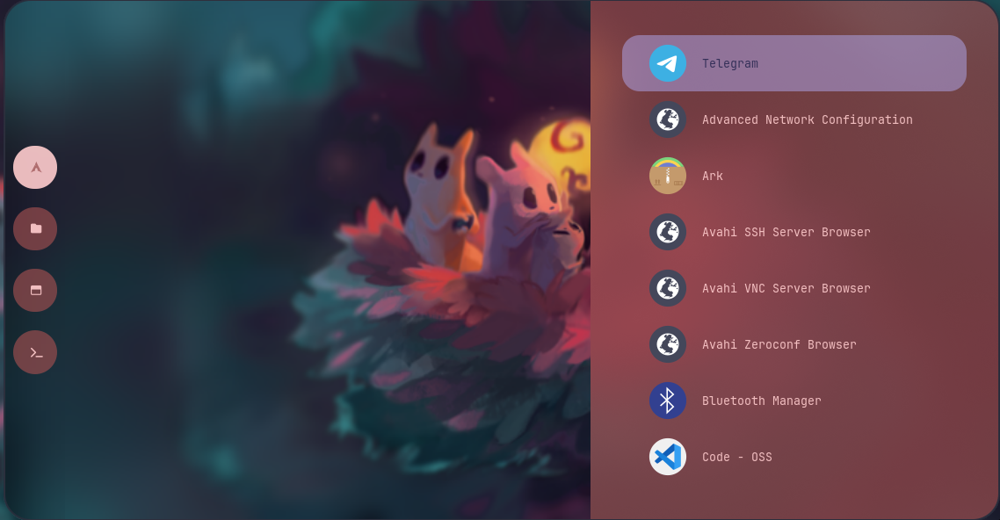
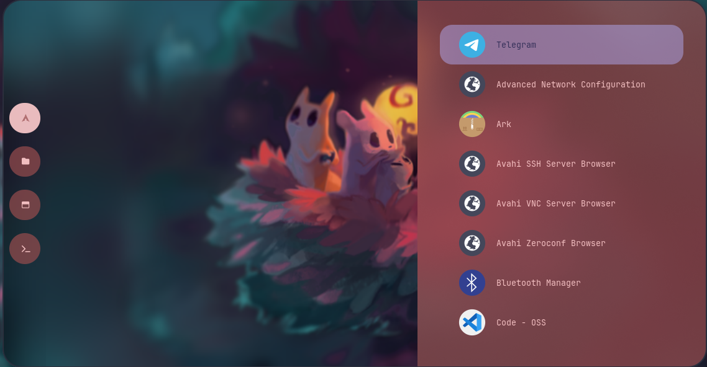
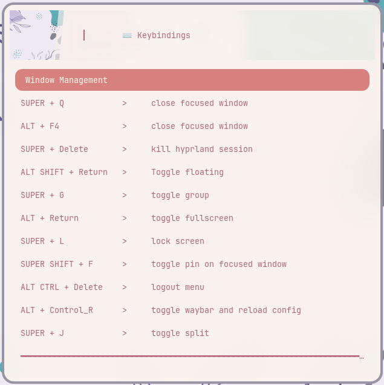
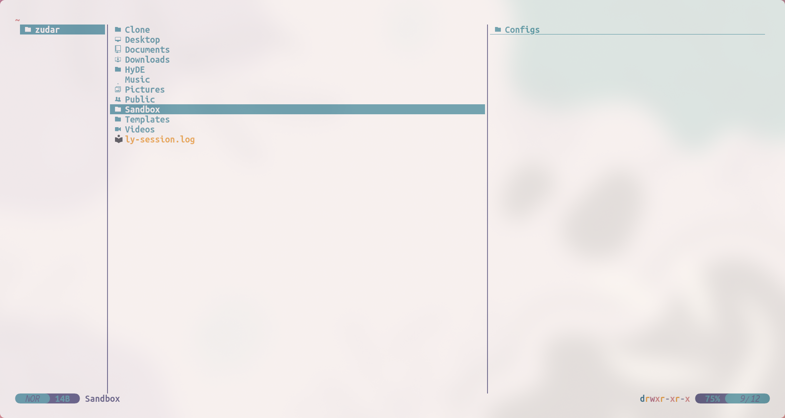
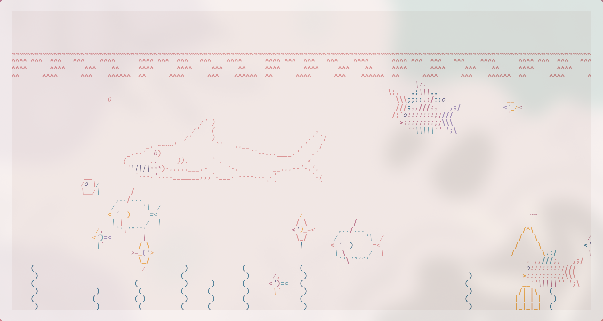

Operating Systems. Part 4 — “Arch Linux Setup†🚀¶
In the previous part we installed Arch Linux via archinstall and successfully added Windows to GRUB. Now for the tasty part—polishing the system: time, Hyprland, apps, fonts, dotfiles, and other sorcery. There will be jokes, a tiny bit of toxicity, and lots of value. Let’s roll 😎
🧠Plan of action¶
- Make Windows respect UTC so Linux and Windows agree on time (who’s the clown here, anyway).
- Clean up fresh Arch + Hyprland with HyDE.
- Fix the fish shell and PATH if something went sideways.
- Pull in my dotfiles (or your own) and sort out fonts.
- Show a set of screenshots/bindings—so you don’t click blindly.
- A quick list of base packages and “why you need them”.
- Create SSH and GPG keys for GitHub.
- A bit of update rituals and the final goodies.
⏱️ Time: make Windows respect UTC¶
By default, Linux assumes the hardware clock (RTC/CMOS) stores UTC, and local time = UTC + your timezone + DST. Windows lives in a parallel universe and assumes the RTC already holds local time. As a result, your clock “drifts†when rebooting.
I believe RTC should only store UTC. Everything else is the OS’s job. So let’s nudge Windows.
Open cmd.exe as Administrator and run:
reg add "HKLM\SYSTEM\CurrentControlSet\Control\TimeZoneInformation" ^
/v RealTimeIsUniversal /t REG_DWORD /d 1 /f
net stop w32time
net start w32time
w32tm /resync
Yes, we just poked the Registry. “Great design†(not), but it works. After this, Windows stops jumping around with the clock. Breathe evenly; proceed.
🧩 First boot into Arch + Hyprland (and a wall of warnings)¶
Boot into the installed Arch → log in → land in the default Hyprland. There will be warnings at the top—that’s fine, we’ll pretty things up now.
🌈 HyDE — a fast, pretty Wayland desktop on Hyprland¶
HyDE is a set of scripts/configs for quick, tidy setup: packages, themes (GTK/Qt), configs (SDDM, Waybar, etc.), NVIDIA fixes, GRUB/systemd‑boot integration. I like it—you suffer less and get a solid desktop fast.
Repo: HyDE‑Project/HyDE. Supporting the folks is a noble cause.
Installing HyDE¶
Open a terminal (Super/Win + Q) and run:
sudo pacman -S --needed git base-devel
git clone --depth 1 https://github.com/HyDE-Project/HyDE ~/HyDE
cd ~/HyDE/Scripts
./install.sh
During the script you’ll be asked a few questions. My answers / comments:
- Chaotic AUR — don’t install (wasn’t my cup of tea).
- AUR helper — I take yay (you can use
paru). - Shell — fish (zsh just doesn’t click for me, sorry).
- Fonts — you can start with
gnu-free-fonts(we’ll add the missing ones later). - SDDM theme — I pick candy (if you chose
lyduring install, it might stayly).
Changing the shell may interrupt the install
Sometimes the script crashes when switching shells: fish isn’t in /etc/shells. Fix it manually and rerun the installer.
echo /usr/bin/fish | sudo tee -a /etc/shells
chsh -s /usr/bin/fish
After changing the shell, log out and back in and run ./install.sh again (and again if needed, until everything finishes). It’s usually better not to pull Flatpak apps from the installer to avoid dragging in a truckload of GNOME bits by accident. Later—add what you like.
PATH after HyDE¶
Sometimes user scripts don’t end up in PATH. Add this for fish:
# add user binaries and hyde scripts (adjust the path on your setup)
set -U fish_user_paths $HOME/.local/bin $HOME/.local/lib/hyde $fish_user_paths
Replace
$HOME/.local/lib/hydewith the actual path if yours is different.
ğŸ–¼ï¸ Screenshots (so you know what “good†looks like)¶
HyDE makes screenshots easy. A default system after running the HyDE script looks like this:


 


📦 Pull your configs (or mine)¶
Want to replace the defaults? First switch theme via Cmd + Shift + T.
I’ve got a config repo: take it wholesale or cherry‑pick. Repo: zudaR107/Configs
mkdir -p ~/Sandbox
cd ~/Sandbox
git clone https://github.com/zudaR107/Configs
Important: app configs live in ~/.config. Before copying, inspect the contents and tweak to taste—I tried to comment where needed.
🅰️ Fonts (system‑wide)¶
# 1) place fonts (ttf/otf/ttc, subfolders are fine)
sudo mkdir -p /usr/local/share/fonts/custom
sudo rsync -av --delete ~/path/to/repo/Fonts/ /usr/local/share/fonts/custom/
# 2) permissions
sudo find /usr/local/share/fonts/custom -type d -exec chmod 755 {} \;
sudo find /usr/local/share/fonts/custom -type f -exec chmod 644 {} \;
# 3) refresh cache
sudo fc-cache -f -v
⚙️ Code – OSS¶
- Open Settings → bring over settings from my repo.
- Install extensions from the
extensionslist.
It’ll be pretty and comfy—Promise™ ✨
More configs (TL;DR what they are)¶
- dunst — lightweight notifications daemon (X11/Wayland). Copy
dunstrc. - fastfetch — a turbo‑charged “neofetch”. Copy
config.jsoncandlogo/Avatar.jpg. - fish — pleasant interactive shell. Configs in
~/.config/fish. - gtk-3.0 — GTK3 themes/icons/fonts.
- hypr — Hyprland configs.
- kitty — fast GPU terminal.
- qt5ct / qt6ct — set themes/fonts for Qt5/Qt6 outside KDE.
- starship — fast cross‑platform prompt (TOML config).
- waybar — status bar for Wayland.
- wlogout — sleek logout / sleep / reboot menu.
- Firefox — profiles / settings / extensions — as you wish.
After copying configs reboot (sometimes twice—Wayland “loves†stability… sometimes).
And here’s my “candy bar†setup:
 Desktop
Desktop
 Console
Console
 Code OSS
Code OSS
 Rofi app launcher
Rofi app launcher
 Keybindings
 Yazi — TUI file manager
 Dolphin — GUI file manager
Dolphin — GUI file manager
 Resource usage (htop)
Resource usage (htop)
 Aquarium with fish
(the last one is a silly flex, but cute 🐟)
⌨️ Hyprland — must‑know hotkeys¶
Cmd = Win/Meta; MB1/MB2 = left/right mouse buttons.
Windows¶
- Cmd + Q / Alt + F4 — close window.
- Alt + Enter — fullscreen.
- Alt + Shift + Enter — toggle floating.
- Cmd + J — toggle split/container orientation.
- Cmd + Delete — exit Hyprland.
Focus / move / resize¶
- Cmd + ↠/ → / ↑ / ↓ — focus window left/right/up/down.
- Cmd + Shift + ↠/ → / ↑ / ↓ — resize (−/+ 30px).
- Cmd + Ctrl + Shift + ↠/ → / ↑ / ↓ — move window.
- Cmd + MB1 — hold and drag window.
- Cmd + MB2 — hold and resize window.
Workspaces¶
- Cmd + 1…0 — go to WS 1…10.
- Cmd + Shift + 1…0 — send window to WS 1…10.
- Cmd + Ctrl + →/↠— next/previous workspace.
- Cmd + S — show/hide scratchpad.
App launchers¶
- Cmd + Enter — terminal (
kitty). - Cmd + E — file manager yazi (mine:
kitty+fishcommand). - Cmd + C — editor (
code). - Cmd + W — browser (
firefox). - Cmd + Space — app search (rofi).
- Cmd + Tab — window switcher (rofi).
Screenshots¶
- Cmd + P — select area.
- Cmd + Ctrl + P — “freeze†screen and select.
- Cmd + Alt + P — current monitor.
- Print — all monitors.
Audio and brightness¶
- F10 / XF86AudioMute — mute.
- F11 / XF86AudioLowerVolume — volume down.
- F12 / XF86AudioRaiseVolume — volume up.
- XF86AudioMicMute — mic mute.
- XF86MonBrightnessUp/Down — brightness.
Useful¶
- Cmd + L — lock screen.
- Ctrl + Alt + Delete — logout menu.
- Alt + K — switch keyboard layout.
🧺 Base packages: what to install and why¶
The example below shows installing from official repos. Swap the package name as needed—same idea.
sudo pacman -S zip
Short notes:
- zip / unzip — ZIP archives (
zip,unzip). - unarchiver —
unar/lsarfor tons of formats (RAR / 7z / tar‑xz, etc.). - pwgen — password generator in the terminal.
- onlyoffice — office suite. From AUR people often use
onlyoffice-bin. - jlink — SEGGER J‑Link tools (flash / debug ARM).
- cmake — project generator / build system.
- qmicroz — “Zip/qmicroz†library for QtCreator (to work with archives) — build from source, author’s repo: artemvlas/qmicroz
- less — pager. Git whines without it.
- gnupg — GPG (sign/encrypt),
- pinentry-gtk or pinentry-qt — GPG passphrase input.
- stm32cubemx — grab from ST’s official website.
- “three‑letter apps†— get from the site, via proxy, as usual 🙃
Useful commands:
# is a package installed?
pacman -Q zip
# search repos
pacman -Ss unarchiver
# binary versions (if in PATH)
unar -v || true
cmake --version || true
🔑 SSH and 🔠GPG for GitHub¶
SSH (fish‑friendly)¶
In fish sometimes there’s no hostname (depends on packages). Let’s take a reliable route:
# 1) comment for the key: host + year
set -l HOSTNAME_SAFE (cat /etc/hostname 2>/dev/null; or uname -n)
set -l COMMENT "github-$HOSTNAME_SAFE-"(date +%Y)
# 2) generate key
ssh-keygen -t ed25519 -C "$COMMENT" -f ~/.ssh/id_ed25519_github
# 3) agent + add key to the session
eval (ssh-agent -c)
ssh-add ~/.ssh/id_ed25519_github
# 4) ssh config for GitHub
mkdir -p ~/.ssh && chmod 700 ~/.ssh
printf 'Host github.com\n HostName github.com\n User git\n IdentityFile %s\n IdentitiesOnly yes\n AddKeysToAgent yes\n' ~/.ssh/id_ed25519_github >> ~/.ssh/config
chmod 600 ~/.ssh/config
# 5) show the public key (copy to GitHub → Settings → SSH and GPG keys)
cat ~/.ssh/id_ed25519_github.pub
# 6) test the connection
ssh -T git@github.com
GPG¶
sudo pacman -S gnupg pinentry-gtk # or pinentry-qt
# 1) quick Ed25519 key (sign‑only), validity 1 year (0 = no expiry)
gpg --quick-generate-key "Your Name <you@example.com>" ed25519 sign 1y
# 2) find KEYID
gpg --list-secret-keys --keyid-format=long
# 3) export the public key (paste into GitHub → New GPG key)
gpg --armor --export YYYYYYYYYYYYYYYY
# 4) configure git
git config --global user.name "Your Name"
git config --global user.email "you@example.com"
git config --global user.signingkey YYYYYYYYYYYYYYYY
git config --global commit.gpgsign true
git config --global tag.gpgSign true
git config --global gpg.program gpg
🔄 Updates and the final touch¶
Update the system (and do it regularly, yes):
sudo pacman -Syu
Rolling‑release is not a joke
Arch and Hyprland get frequent updates. Sometimes pain arrives. Options: install an LTS kernel, update less often (risk piling up issues), or—the better path—fix problems as they appear. Also: read news / changelogs.
🏁 What we achieved¶
We tamed the clock (UTC for the win), rolled out HyDE, fixed the shell / PATH, migrated configs, set up fonts and hotkeys, and installed base software. We also prepared SSH/GPG for committing into a bright future 🖤
The first time may take 1–2 full days (been there). Now it takes me ~3 hours for a clean setup. Don’t fear Arch—and it will love you back! 🐧✨
Next up: a series of theory articles on OS fundamentals (and beyond). Stay tuned 😉